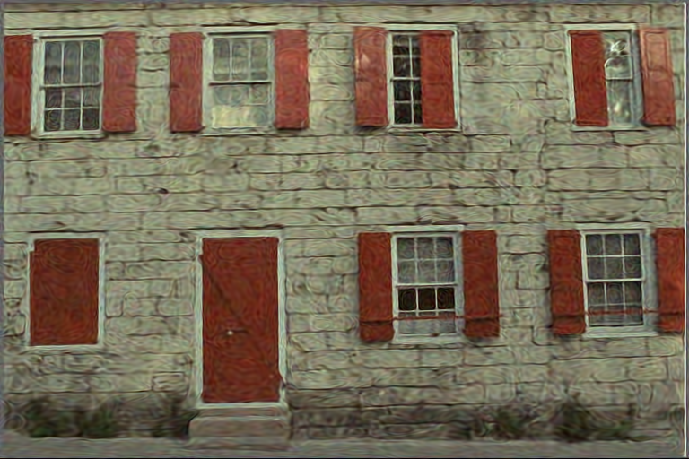

Image Denoising (Gaussian noise, σ=25)
Results in PSNR
GT
Noisy
DIP (22dB)
SIREN (22.43dB)
PIP - Ours (21.52dB)
GT
Noisy
DIP (30.12dB)
SIREN (29.36dB)
PIP - Ours (29.92dB)
GT
Noisy
DIP (29.56dB)
SIREN (26.89dB)
PIP - Ours (28.47dB)
GT
Noisy
DIP (28.89dB)
SIREN (29.76dB)
PIP - Ours (29.12dB)
GT
Noisy
DIP (29.79dB)
SIREN (28.91dB)
PIP - Ours (29.77dB)
GT
Noisy
DIP (25.67dB)

SIREN (24.87dB)
PIP - Ours (25.27dB)
GT
Noisy
DIP (30.19dB)
SIREN (29.46dB)
PIP - Ours (29.59dB)
GT
Noisy
DIP (30.62dB)
SIREN (30.49dB)
PIP - Ours (30.41dB)
GT
Noisy
DIP (30.2dB)
SIREN (29.47dB)
PIP - Ours (30.48dB)